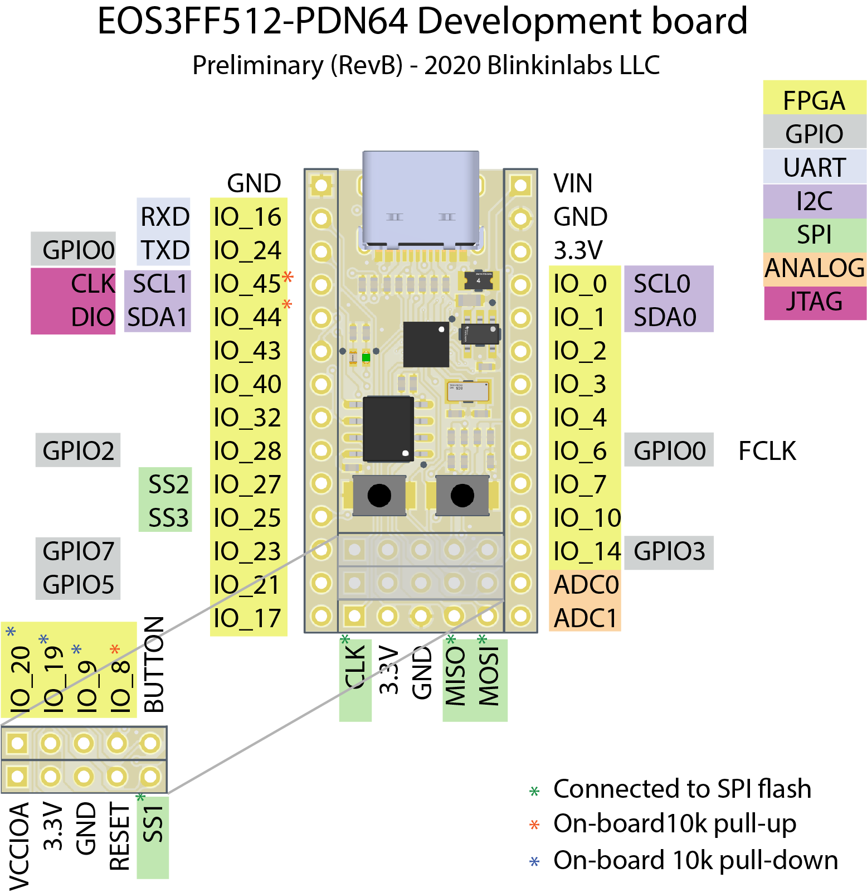

Pinout and Peripherals
Pinout
Compared to a normal microcontroller, the pins on the QL-EOS-S3 SoC are a little goofy. Similar to a normal microcontroller, it has some hardware GPIO pins that are attached to the ARM core, along with standard peripherals such as UART, and SPI busses, along with an analog port. Unlike a normal microcontroller, however, most of the pins are not connected to the ARM core at all! Instead, they are all connected to the FPGA core, and can be used by writing your own peripherals in Verilog.
Here is a map of all of the fixed pins on the board:

All of the pins on the right and left sides of the boards can be used freely. Note that the two JTAG pins (IO_44 and IO_45 on RevB) have on-board pullup resistors to the 3.3V line. The pins in the center section are also possible to use use, however they affect how the SoC boots.
Use with caution: SPI pins
The SPI pins (CLK, MOSI, MISO, and SS1) are attached to the on-board SPI flash. The CLK, MOSI, and MISO pins can be safely shared with other SPI devices, as long as they do not interfere with the boot process.
Use with caution: Bootstrap pins
IO_8, IO_9, IO_19, and IO_20 are avaiable as general-purpose IO, however they have 10k pull-down resistors connected to them, and their values have to be logic low at boot time for the microcontroller to turn on correctly.
Hardware GPIO
The arm core is able to control 8 of the pins (marked GPIO0..7 in the pinout diagram). Here are the steps to use them:
Step 1: Check that the GPIO is assigned to the correct pin
Each GPIO can be connected to one of two hardware pins. The pin selection is stored in IOMUX_IO_REG_SEL, at 0x40004D60. Here is a table of the available GPIO pin mappings, and the proper one for the breakout board:
| GPIO | Default pin | Alternate pin | Breakout board pin | Notes |
|---|---|---|---|---|
| 0 | IO_6 | IO_24 | IO_6 | |
| 1 | IO_9 | IO_26 | IO_9 | Bootstrap pin |
| 2 | IO_11 | IO_28 | IO_28 | Breakout board uses alternate pin |
| 3 | IO_14 | IO_30 | IO_14 | |
| 4 | IO_18 | IO_31 | IO_18 | Connected to USER BUTTON |
| 5 | IO_21 | IO_36 | IO_21 | |
| 6 | IO_22 | IO_38 | IO_22 | Connected to STATUS LED |
| 7 | IO_23 | IO_45 | IO_23 |
Only GPIO2 needs to be assigned to the alternate pin, so the following can be used to fully configure the GPIO pin assignments:
machine.mem32[0x40004D60] = (1<<2)
Step 2: Configure the pin for GPIO mode
Now that we know the pin that the GPIO is assigned to, the next step is to configure it for GPIO mode, as either an input or output. To do this, write to the IOMUX_PADxx_CTRL register associated with the pad. The address is: 0x40004C00 + 4*(pad number)
Example: Configure pin IO_18 as a GPIO input with pull-up enabled:
machine.mem32[0x40004C00 + (18*4)] = (0x3<<0) | (0x0<<3) | (1<<8) | (1<<5) | (1<<11) | (0x1<<6)
Example: Configure pin IO_22 as a GPIO output with 4mA drive strength:
machine.mem32[0x40004C00 + (22*4)] = (0x3<<0) | (0x0<<3) | (1<<8)
Step 3: Read (or write) to the GPIO
To read from a gpio, use the register MISC_IO_INPUT at 0x40005100. For instance, to read the value of GPIO4 (user button):
print((machine.mem32[0x40005100] >> 4) & 0x1)
To write a GPIO value, us the register MISC_IO_OUTPUT at 0x40005104. For instance, to set GPIO6 (status led) high:
machine.mem32[0x40005104] |= (1 << 6)
Interrupts
Each GPIO pin can be used as a level or edge sensitive interrupt. All GPIO pins share a single interrupt vector.
TODO: Example for using interrupts
Example GPIO library
Here is a barebones GPIO library, written in Micropython:
class GPIO:
IOMUX_BASE = 0x40004C00
IOMUX_IO_REG_SEL = 0x40004D60
MISC_IO_INPUT = 0x40005100
MISC_IO_OUTPUT = 0x40005104
def __init__(self):
# Configure GPIO pin selects for breakout board
# Note: Only GPIO2 uses alternate pin setting
machine.mem32[self.IOMUX_IO_REG_SEL] = (1<<2)
def write(self, gpio, val):
if val == 0: # Low
machine.mem32[self.MISC_IO_OUTPUT] &= ~(1 << gpio)
else: # High
machine.mem32[self.MISC_IO_OUTPUT] |= (1 << gpio)
def read(self, gpio):
return ((machine.mem32[self.MISC_IO_INPUT] >> gpio) & 0x01)
def pinmode(self, gpio, mode):
pads = (6,9,11,14,18,21,22,23)
if mode == 'input':
machine.mem32[self.IOMUX_BASE + pads[gpio]*4] = (0x3<<0) | (0x0<<3) | (1<<8) | (1<<5) | (1<<11)
elif mode == 'input_pullup':
machine.mem32[self.IOMUX_BASE + pads[gpio]*4] = (0x3<<0) | (0x0<<3) | (1<<8) | (1<<5) | (1<<11) | (0x1<<6)
elif mode == 'output':
machine.mem32[self.IOMUX_BASE + pads[gpio]*4] = (0x3<<0) | (0x0<<3) | (1<<8)
And to use it:
gpio=GPIO()
gpio.pinmode(6,'output')
gpio.write(6,1) # turn on LED
gpio.pinmode(4,'input_pullup')
gpio.read(4) # read button input
UART
TODO
SPI Master
SPI Master 1 is connected to the ARM, and available for use. Unfortunately, the technical reference manual is very light on the details, and the SDK drivers are buggy and poorly documented. It appears to be an instantion of a Synopsys DesignWire IP 'DW_apb_ssi'. Because this a commonly used IP block, there are some references to similar hardware:
TODO
Analog to digital controller
TODO
FPGA
The FPGA is the swiss army knife of peripherals
Clocks
There are 3 input clocks from the ARM to the FPGA:
| Clock | Name | Max frequency | Notes |
|---|---|---|---|
| C16 | Sys_Clk0 | ? | General purpose |
| C21 | Sys_Clk1 | ? | General purpose |
| C02 | Sys_Pclk | ? | SPI master APB bus clock (?) |
Sys_Clk0 and Sys_Clk1 are 'general purpose' clocks. Both are fed from dedicated clocks, so configuring them should not intefere with any other ARM peripherals. They can be driven by either the high or low speed system clocks, with a divisor from 0-512. The technical reference manual specifies a default maximum speed of 10MHz, however speeds up to the system clock (72MHz) appear to function well.
Sys_Pclk is fed from C02, which is shared with some other ARM peripherals. It is also available for use, but reconfiguring it might cause problems.
There are 2 output clocks from the FPGA to the ARM:
| Clock | Name | Max frequency | Usage |
|---|---|---|---|
| C40 | WB_CLK | 10 Mhz | Fabric to Wishbone clock |
| C41 | Sys_Pkfb_Clk | 10 MHz | Fabric to PKFB (packet fifo) clock |
Both of these clocks are special purpose, and should be configured if you are planning to use their associated peripherals.
IO pads
The FPGA can control all of the IO pads, including a direction function. However, the pads must first be configured by the ARM processor, for both driving source and I/O control functions.
Some of the pads are special clock inputs (TODO: which ones?)
SPI Master
The FPGA is supposed to be able to interface with the SPI master, for some reason. It's not clear how to do this, or what the intended use case is.
Communicating with the FPGA
To get the best use out of your FPGA designs, you'll want to talk to them from the ARM core. Here are some of the ways to do so.
AHB <-> wishbone bridge
The easiest way to talk to the FPGA is through the AHB<->wishbone bus, which directly maps into the ARM memory space.
| Block | M4 base address | Size |
|---|---|---|
| Fabric (FPGA) | 0x4002_0000 | 128KB |
Transactions must be intiated by the ARM. For bulk data transfer, consider the Packet FIFO interface.
SDMA
TODO
Packet FIFO
There are 4 fifo blocks:
| Block | M4 base address | Size |
|---|---|---|
| RAMFIFO0 (FPGA) | 0x4001_8000 | 4KB |
| RAMFIFO1 (FPGA) | 0x4001_9000 | 4KB |
| RAMFIFO2 (FPGA) | 0x4001_A000 | 4KB |
| RAMFIFO3 (FPGA) | 0x4001_B000 | 4KB |
TODO
Interrupts
There are 4 interrupt sources from the FPGA to the ARM.
| Intr Num | NVIC Intr | Address | Exception | Priority | Comments |
|---|---|---|---|---|---|
| 20 | 4 | 0x50 | Fabric | Message 0-7 (programmable) | SoC WIC interrupts |
FB_0_INTR, FB_1_INTR, FB_2_INTR, FB_3_INTR
Other peripherals (I2C, I2S, PDM, FFE, Sensor Manager)
The datasheet and technical reference talk about some other useful peripherals, such as I2C, I2S, and PDM. Unfortunately, these peripherals seem to be attached to the Sensor Manager, and thus not directly accessable to the ARM part. It's unclear if the Sensor Manager is present in the version of the SoC that we have. The Flex Fusion Engine (FFE) is also mentioned, but is likely not enabled in the part variant that we have without some trickery.
Fortunately, this is the kind of task that the FPGA is perfect for. For instance, if you want an I2C bus, or ten, you can design them using Verilog, then use them directly from the ARM core. You're free to make the best possbile peripherals!